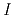
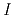
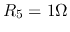
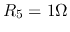

The Problems
Find the equivalent resistance between points a and b. (The diagonal wires are not connected to each other.)

In the circuit below,  ,
,  .
.  ,
,  and
are three switches. The current  is measured in the following
two cases:
and
are three switches. The current  is measured in the following
two cases:

In the circuit below,  ,
,  ,
,  ,
,  ,
,
 , . Find
, . Find  for it to get maximum power.
What is the power?
for it to get maximum power.
What is the power?